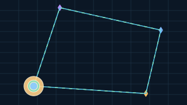

The Singularity Workshop · implementation trail
From your API to a living SVG
This is not a browser drawing pretending to be C#. The image is a checked-in snapshot generated by the Visualizer frame/resource contracts, the optional GUI.SVG backend, and the reusable GUI.SVG adapter. The colors mark the real handoff between scene data, API consumption, and SVG manifestation.
1 · Scene + contract data
2 · Visualizer API consumption
3 · GUI.SVG manifestation + SVG motion
Output · Visualizer → GUI.SVG → SVG

The points and segments are emitted from submitted indexed triangle meshes. The dashed route and three-marker trail are explicit SVG animation nodes; the route explicitly closes back to its start to avoid a position reset jump. SVG animation is presentation, not an FSM update loop.
Code · 1. Build the scene
// integrations/GuiSvg/Proof/Program.cscatalog.SetGeometry(pointId, PointMesh());catalog.SetGeometry(lineId, LineMesh());catalog.SetMaterial(lineMaterialId, new VisualizerMaterial(1, ...));var commands = new List<VisualizerDrawCommand>();// Four point draws + four transformed segment draws.var frame = new VisualizerFrame( new VisualizerView(Vector3.Zero, Matrix4x4.Identity, Matrix4x4.Identity), commands);2. The public Visualizer API is consumed here
await using var visualizer = new Visualizer( new GuiSvgVisualizerBackend(output, animateConnectedPoints: true), catalog);var result = await visualizer.RenderAsync(frame);3. The reusable GUI.SVG adapter emits the document
// integrations/GuiSvg/GuiSvgVisualizerBackend.csscene.Child("svg-path", $"draw-{drawIndex++}", node => node .Property("d", path) .Property("fill", fill));// Explicit motion nodes are added to the same GUI tree.var svg = _renderer.Render(scene.Build(), width: 320, height: 180);File.WriteAllText(_outputPath, svg);
Open the actual proof programGeometry, materials, frame construction, and Visualizer.RenderAsync
Open the GUI.SVG integration backendVisualizer resource consumption, neutral GUI nodes, and explicit SVG motion
Open the reusable GUI.SVG rendererActual package source, not a duplicate implementation inside Visualize
Read the Primitive Gallery guideCompare the direct proof backend with the GUI.SVG integration path
Boundary: GUI.SVG is a 2D manifestation adapter. This integration proof maps the Visualizer geometry into an XY view; it does not claim to implement perspective, depth testing, a production GPU renderer, or FSM_COS-driven animation. The source-mode integration is tested in CI against the GUI repository's development branch. NuGet publishing remains disabled.